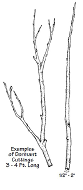

Cuttings, Transplants, and Seeding
What is it?
Cuttings are stem or root sections taken from a source plant for the purpose of propogating a new plant. Cuttings for riparian areas are ususally collected from hardwood species while the source plant is dormant (typically fall or winter). Transplants involve moving entire, intact plants to the riparian area to reestablish vegetation. Transplants can be grown in nurseries or be harvested from a location near the restoration site. Both cuttings and transplants can be an effective way to promote the reestablishment of native vegetation and stablilize eroding banks. Seeding is also another method for riparian vegetation establishment. Seeds should be secured to the bank to prevent displacement durning storm events. Revegetation BMPs also include sprigs, live staking, plugs, and grass mats.

(diagram from Streambank revegetation and protection: a guide for Alaska)
Conservation Benefits
- Improved wildlife and fish habitat
- Flood water disperision and retension
- Protect water quality by filtering out sediment and pollutants
- Reestablishment of native vegetation
- Stablize eroding streambanks
What does it include?
Technical experts should be consulted early in the process because vegetation selection will depend on many factors including extent of revegetation needed, tansplant vs. cuttings vs. seeding, soil types, water table elevation, ecoregion and watershed considerations, hydrologic regimes, and vegetation diversity. Site preparation usually includes removing exotic vegetation, tilling desired location in rows or at specific locations, and removing other vegetation in the immediate area that could supress or compete with the plantings. Vegetation can be planted by hand or with a mechanical tree planter.
For another BMP that can use dormant or live cuttings see Fascines .
Cuttings, Transplants, and Seeding Links
- Critical seeding (Kansas State University)
- Dormant cuttings (p.16; Alaska Dept. Fish and Game)
- Intervention in the riparian zone: direct-seeding methods (p.345; Cooperative Research Centre for Catchment Hydrology)
- Seeding and planting (VT Soil Erosion Research and Consultancy)
- Shrubs and trees suited for dormant cuttings (p.27; Alaska Dept. Fish and Game)
- Temporary seeding (NRCS)
- Temporary and permanent seeding for construction (AgriLife Extension)
- Transplanting (p.18 and 23; Alaska Dept. Fish and Game)
- Vegetative seeding (p.27; Arizonia Department of Environmental Quality)
Cuttings, Transplants, and Seeding Bibliography